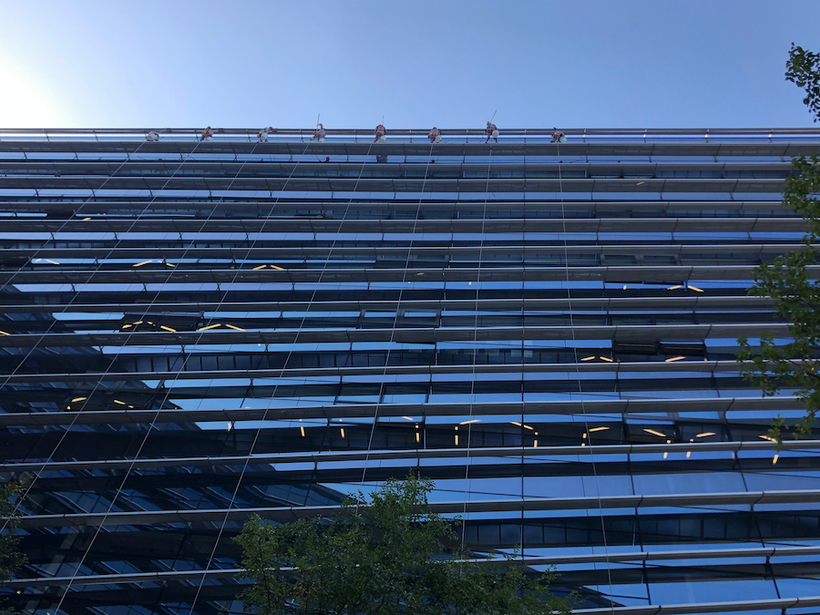

2019 新年快乐
2018 过去了，是收获的一年，我更加清楚了技术的意义。
技术的目的，是从混乱中找到秩序，从秩序中获得价值。
技术的方法，是抽象和分析，主要是抽象。
同时，我渐渐从名称和概念中解脱，思想更加自由，孔子说，君子不器。对于技术人而言，就是不要用名称和概念封死自己的路径。“设计模式”，“架构”，“算法”，“深度学习”，“底层”，有时有用，但不重要。
2018 年也是忙碌的一年，我思考工作甚于关注自己，导致荒废了学业，十分不应该。新的一年，我计划重新开始学习一些有趣且有用的知识，磨练自己的思维。
《The elements of computing systems》手把手构建一个简单的计算机，更深刻理解各类计算系统及其中的抽象方法。
《控制论与科学方法论》将事物抽象为控制系统，以控制论的语言教你做人。
...
在学习过程中，我会尽量写一些东西。曾经我因为担心写的不够全面，不爱做读书笔记，现在我没了这个心理障碍。既然知识的终点就是遗忘，那我不如聊聊自己的思考。
另外，我结婚了，买房了，装修了，这些都与技术关系不大，但让我变成一个更好的人。
2019 年已经到来，祝大家新年快乐。
